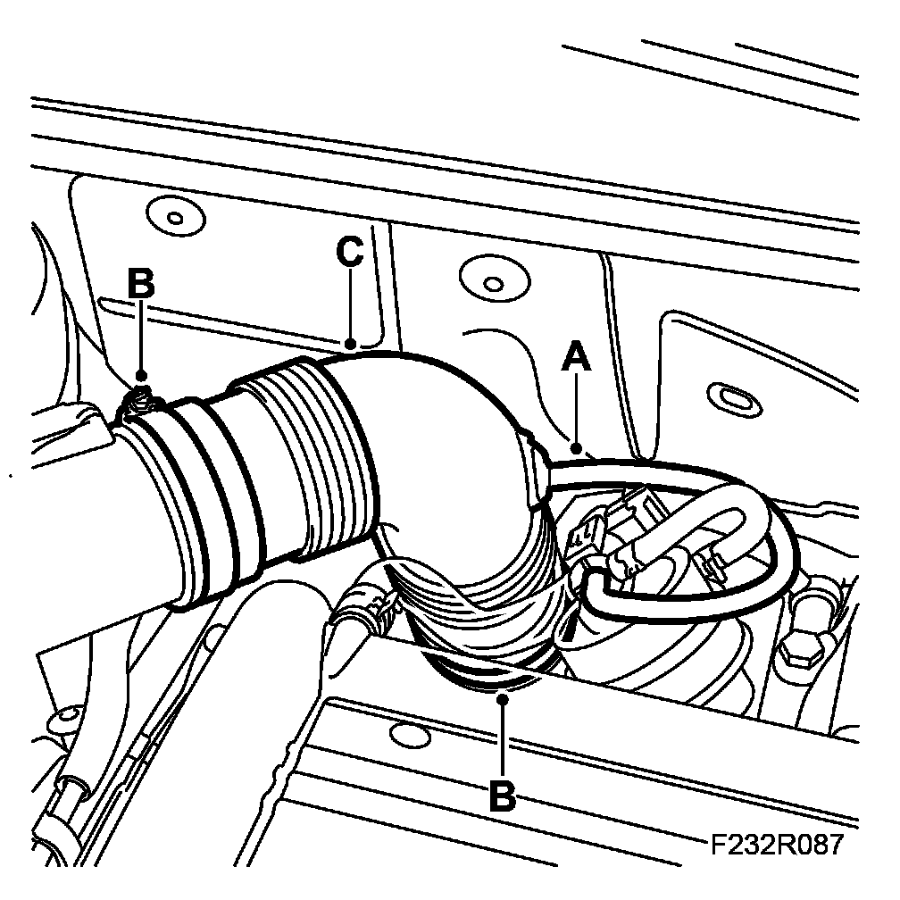
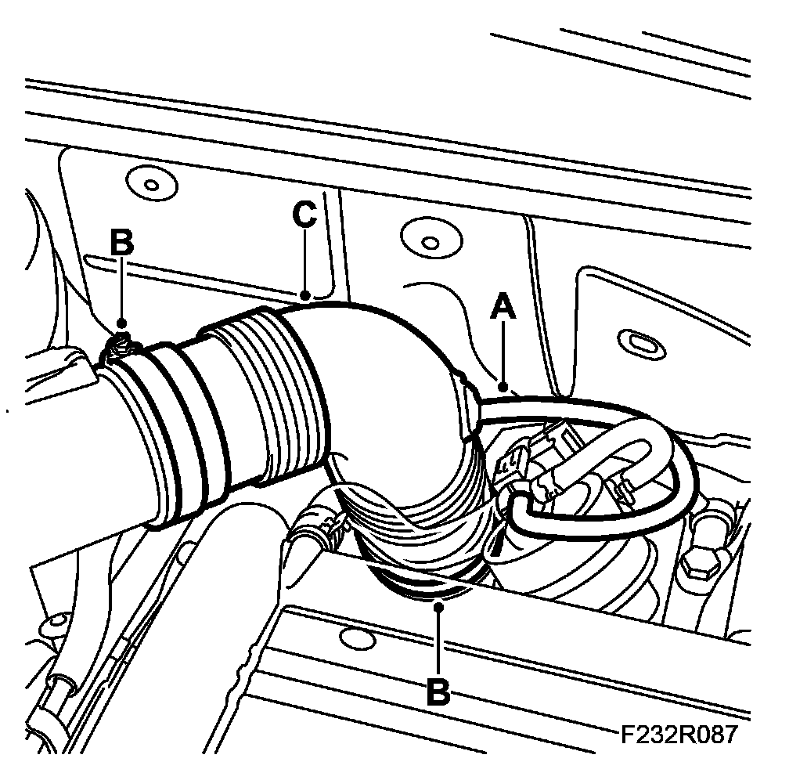

Hose, Air Cleaner Connection B207
Hose, Air Cleaner Connection B207
To remove
1. Remove the air cleaner connection hose.
- Detach the hose (A) from the solenoid valve.
- Undo the hose clips (B).
- Remove the pipe (C).

To fit
1. Fit the air cleaner connection hose.
- Fit the pipe (C).
- Screw in the hose clips (B).
- Fit the hose (A) to the solenoid valve.
